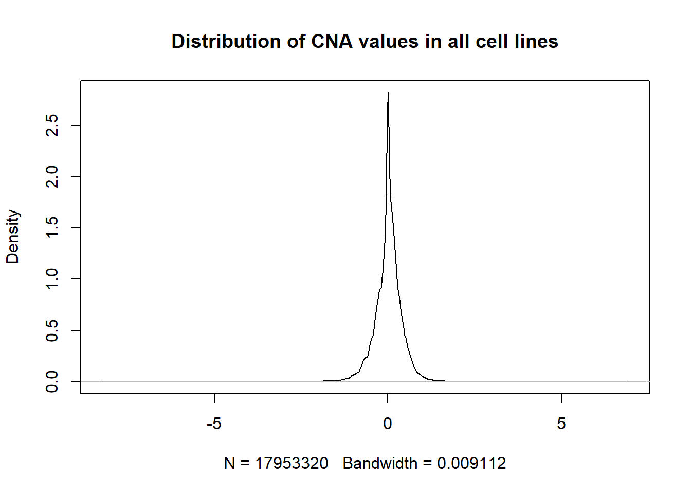
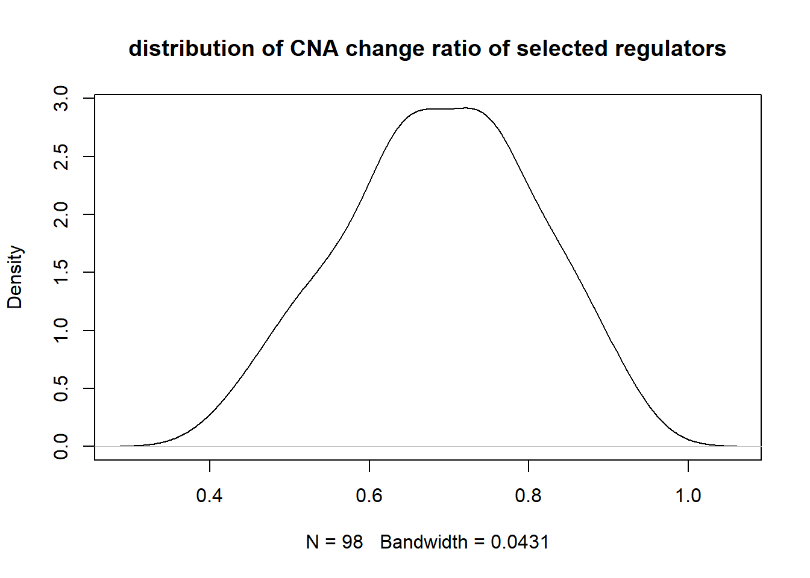

Copy number alteration analysis
Bingru Sun
2018/11/29
Last updated: 2018-11-30
workflowr checks: (Click a bullet for more information)-
✔ R Markdown file: up-to-date
Great! Since the R Markdown file has been committed to the Git repository, you know the exact version of the code that produced these results.
-
✔ Environment: empty
Great job! The global environment was empty. Objects defined in the global environment can affect the analysis in your R Markdown file in unknown ways. For reproduciblity it’s best to always run the code in an empty environment.
-
✔ Seed:
set.seed(20180723)The command
set.seed(20180723)was run prior to running the code in the R Markdown file. Setting a seed ensures that any results that rely on randomness, e.g. subsampling or permutations, are reproducible. -
✔ Session information: recorded
Great job! Recording the operating system, R version, and package versions is critical for reproducibility.
-
Great! You are using Git for version control. Tracking code development and connecting the code version to the results is critical for reproducibility. The version displayed above was the version of the Git repository at the time these results were generated.✔ Repository version: 5d37946
Note that you need to be careful to ensure that all relevant files for the analysis have been committed to Git prior to generating the results (you can usewflow_publishorwflow_git_commit). workflowr only checks the R Markdown file, but you know if there are other scripts or data files that it depends on. Below is the status of the Git repository when the results were generated:
Note that any generated files, e.g. HTML, png, CSS, etc., are not included in this status report because it is ok for generated content to have uncommitted changes.Ignored files: Ignored: .Rhistory Ignored: data/.DS_Store Untracked files: Untracked: analysis/goslim_sub_old_order.pdf Untracked: data/._.DS_Store Untracked: data/._GSE36133_series_matrix.txt Untracked: data/CCLE/ Untracked: data/GDSC/ Untracked: data/GDSC_CCLE_experiment_cl.Rdata Untracked: data/GDSC_CCLE_mutual.Rdata Untracked: data/GSE36133_series_matrix.txt Untracked: data/Gene_regulators/ Untracked: data/ccle_regsva_regulator.Rdata Untracked: data/cnv_result.Rdata Untracked: data/cpgsva_z_col.Rdata Untracked: data/dge.RData Untracked: data/drug_totest.Rdata Untracked: data/dry_regulator_gene_set.Rdata Untracked: data/fry_regulator_gene_set_lung.Rdata Untracked: data/fry_regulator_gene_set_skin.Rdata Untracked: data/fry_result.Rdata Untracked: data/gogsva_z_col.Rdata Untracked: data/goslim_order.Rdata Untracked: data/gosva.Rdata Untracked: data/hggsva_z_col.Rdata Untracked: data/keggsva_z_col.Rdata Untracked: data/lung_common_cl.Rdata Untracked: data/lung_common_cl_pd.Rdata Untracked: data/regsva_new_new_z_col.Rdata Untracked: data/regsva_new_z_col.Rdata Untracked: data/regsva_z_col.Rdata Untracked: data/regsva_z_row.Rdata Untracked: data/regsva_zscore.Rdata Untracked: data/regulator_dge.Rdata Untracked: data/regulator_regulation.Rdata Untracked: data/regulators_5_cl_20_tar.Rdata Untracked: data/selected_cl.Rdata Unstaged changes: Deleted: analysis/about.Rmd Deleted: analysis/drugresponse.Rmd Deleted: analysis/gdsccorr.Rmd Deleted: analysis/license.Rmd Deleted: docs/drugheatmap_goslim.pdf Deleted: docs/drugheatmap_target.pdf Deleted: docs/drugheatmap_target_nodup.pdf Deleted: docs/firstheatmap.pdf Deleted: docs/fourthheatmap.pdf Deleted: docs/gs-hp_1.pdf Deleted: docs/gs-hp_2.pdf Deleted: docs/gs-hp_3.pdf Deleted: docs/secondheatmap.pdf Deleted: docs/thirdheatmap.pdf
Expand here to see past versions:
| File | Version | Author | Date | Message |
|---|---|---|---|---|
| Rmd | 5d37946 | bingrus | 2018-11-30 | wflow_publish(“analysis/cnvchange.Rmd”) |
| html | de340ab | bingrus | 2018-11-30 | Build site. |
| Rmd | 86b2596 | bingrus | 2018-11-30 | wflow_publish(“analysis/cnvchange.Rmd”) |
| html | b7984a1 | bingrus | 2018-11-29 | Build site. |
| html | 479087a | bingrus | 2018-11-29 | Build site. |
| html | 4668c15 | bingrus | 2018-11-29 | Build site. |
| Rmd | 474bc65 | bingrus | 2018-11-29 | wflow_publish(“analysis/cnvchange.Rmd”) |
Method
compute copy number alteration change ratio by 1) extracting cell lines with mutated regulators, and the cell lines with non-mutated regulator. 2) count the cnv change by setting cutoff based on the data in all cell lines and all genes 3) compute the ratio of cnv change that is higher in not mutated cells lines of a regulator
Distribution of CNA change ratio of all regulators
Using SYMBOL as id variables[1] 0.00295694 Min. 1st Qu. Median Mean 3rd Qu. Max.
-8.216500 -0.172600 0.017600 0.002957 0.210500 6.904900 
Expand here to see past versions of info-1.png:
| Version | Author | Date |
|---|---|---|
| 4668c15 | bingrus | 2018-11-29 |

Expand here to see past versions of info-2.png:
| Version | Author | Date |
|---|---|---|
| 4668c15 | bingrus | 2018-11-29 |
Distribution of CNA change ratio of selecter regulators
- selected regulators (mutated in at least 5 cell lines and at least 20 target genes)

Expand here to see past versions of plot-1.png:
| Version | Author | Date |
|---|---|---|
| 4668c15 | bingrus | 2018-11-29 |
Min. 1st Qu. Median Mean 3rd Qu. Max.
0.4154 0.6048 0.6834 0.6883 0.7687 0.9314 regulators of ratio >= 0.5
[1] "AGT" "AHR" "AKT1" "AR" "ATF4" "ATF6"
[7] "BACH2" "BPTF" "BRCA1" "CARM1" "CDC5L" "CDKN1A"
[13] "CDX2" "CREBBP" "CUX1" "EGF" "EGR2" "ELF2"
[19] "EP300" "ESR1" "ESR2" "FOXI1" "FOXM1" "FOXN1"
[25] "GATA2" "GATA3" "GATA6" "HELZ2" "HIF1A" "HNF1A"
[31] "IL1A" "IL1B" "IRF7" "IRF8" "JAK2" "MAZ"
[37] "MECOM" "MEIS1" "MSX1" "MTF1" "MYCN" "NCOA1"
[43] "NCOA3" "NCOA6" "NF1" "NFATC2" "NFE2L1" "NFE2L2"
[49] "NFKB1" "NR1H3" "NR1H4" "NR3C1" "OR5I1" "PAX2"
[55] "PAX6" "PIK3CA" "POU6F1" "PPARA" "PPARGC1A" "PTEN"
[61] "RB1" "RELA" "REL" "REPIN1" "REST" "RREB1"
[67] "RUNX1" "RUNX2" "RXRB" "SF1" "SOX5" "SOX9"
[73] "SP3" "SPZ1" "SREBF1" "STAT2" "STAT3" "STAT5B"
[79] "STAT6" "TBL1X" "TCF12" "TCF3" "TCF4" "TFCP2"
[85] "TFDP2" "TGIF1" "TP73" "ZBTB14" "ZEB1" "ZHX2"
[91] "ZIC1" histogram and density plot of mutated cell line distribution
Min. 1st Qu. Median Mean 3rd Qu. Max.
0.000 1.000 3.000 5.087 6.000 184.000 selected regulators in wilcoxon tests (p-value <0.05)
[1] "AGT" "AHR" "AKT1" "ATF4" "ATF6" "BACH2"
[7] "BPTF" "CARM1" "CDC5L" "CDKN1A" "CDX2" "CHD9"
[13] "CREBBP" "CUX1" "EGF" "EGR2" "ELF2" "EP300"
[19] "ESR1" "FOXA2" "FOXI1" "FOXM1" "FOXN1" "GATA2"
[25] "GATA3" "GATA6" "HELZ2" "HNF1A" "IL1A" "IL1B"
[31] "IRF7" "IRF8" "MAZ" "MECOM" "MEIS1" "MSX1"
[37] "MTF1" "MYCN" "NCOA1" "NCOA3" "NCOA6" "NF1"
[43] "NFATC2" "NFE2L1" "NFE2L2" "NR1H3" "NR1H4" "NR3C1"
[49] "OR5I1" "PAX2" "PAX6" "PIK3CA" "POU6F1" "PPARA"
[55] "PPARGC1A" "PTEN" "RELA" "REL" "REPIN1" "REST"
[61] "RREB1" "RUNX1" "RUNX2" "RXRB" "SF1" "SMAD3"
[67] "SMAD4" "SOX5" "SOX9" "SP3" "SPZ1" "SREBF1"
[73] "STAT5B" "STAT6" "TBL1X" "TCF12" "TCF3" "TCF4"
[79] "TFCP2" "TFDP2" "TGIF1" "TP73" "TYK2" "ZBTB14"
[85] "ZEB1" "ZHX2" selected regulators in both analysis (wilcoxon tests p-value <0.05, change ratio >= 0.5)
[1] "AGT" "AHR" "AKT1" "ATF4" "ATF6" "BACH2"
[7] "BPTF" "CARM1" "CDC5L" "CDKN1A" "CDX2" "CREBBP"
[13] "CUX1" "EGF" "EGR2" "ELF2" "EP300" "ESR1"
[19] "FOXI1" "FOXM1" "FOXN1" "GATA2" "GATA3" "GATA6"
[25] "HELZ2" "HNF1A" "IL1A" "IL1B" "IRF7" "IRF8"
[31] "MAZ" "MECOM" "MEIS1" "MSX1" "MTF1" "MYCN"
[37] "NCOA1" "NCOA3" "NCOA6" "NF1" "NFATC2" "NFE2L1"
[43] "NFE2L2" "NR1H3" "NR1H4" "NR3C1" "OR5I1" "PAX2"
[49] "PAX6" "PIK3CA" "POU6F1" "PPARA" "PPARGC1A" "PTEN"
[55] "RELA" "REL" "REPIN1" "REST" "RREB1" "RUNX1"
[61] "RUNX2" "RXRB" "SF1" "SOX5" "SOX9" "SP3"
[67] "SPZ1" "SREBF1" "STAT5B" "STAT6" "TBL1X" "TCF12"
[73] "TCF3" "TCF4" "TFCP2" "TFDP2" "TGIF1" "TP73"
[79] "ZBTB14" "ZEB1" "ZHX2" Session information
R version 3.5.1 (2018-07-02)
Platform: x86_64-w64-mingw32/x64 (64-bit)
Running under: Windows 10 x64 (build 17134)
Matrix products: default
locale:
[1] LC_COLLATE=Chinese (Simplified)_China.936
[2] LC_CTYPE=Chinese (Simplified)_China.936
[3] LC_MONETARY=Chinese (Simplified)_China.936
[4] LC_NUMERIC=C
[5] LC_TIME=Chinese (Simplified)_China.936
attached base packages:
[1] stats4 parallel stats graphics grDevices utils datasets
[8] methods base
other attached packages:
[1] reshape2_1.4.3 GSEABase_1.42.0 graph_1.58.2
[4] annotate_1.58.0 XML_3.98-1.16 AnnotationDbi_1.42.1
[7] IRanges_2.14.12 S4Vectors_0.18.3 Biobase_2.40.0
[10] BiocGenerics_0.26.0
loaded via a namespace (and not attached):
[1] Rcpp_0.12.19 compiler_3.5.1 git2r_0.23.0
[4] plyr_1.8.4 workflowr_1.1.1 R.methodsS3_1.7.1
[7] R.utils_2.7.0 bitops_1.0-6 tools_3.5.1
[10] digest_0.6.18 bit_1.1-14 evaluate_0.12
[13] RSQLite_2.1.1 memoise_1.1.0 DBI_1.0.0
[16] yaml_2.2.0 stringr_1.3.1 knitr_1.20
[19] rprojroot_1.3-2 bit64_0.9-7 data.table_1.11.8
[22] rmarkdown_1.10 blob_1.1.1 magrittr_1.5
[25] whisker_0.3-2 backports_1.1.2 htmltools_0.3.6
[28] xtable_1.8-3 stringi_1.1.7 RCurl_1.95-4.11
[31] R.oo_1.22.0 This reproducible R Markdown analysis was created with workflowr 1.1.1